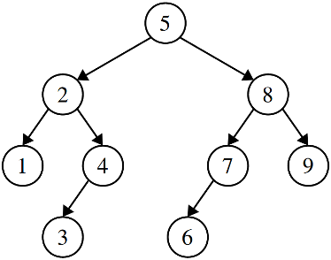
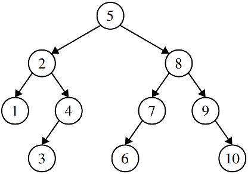
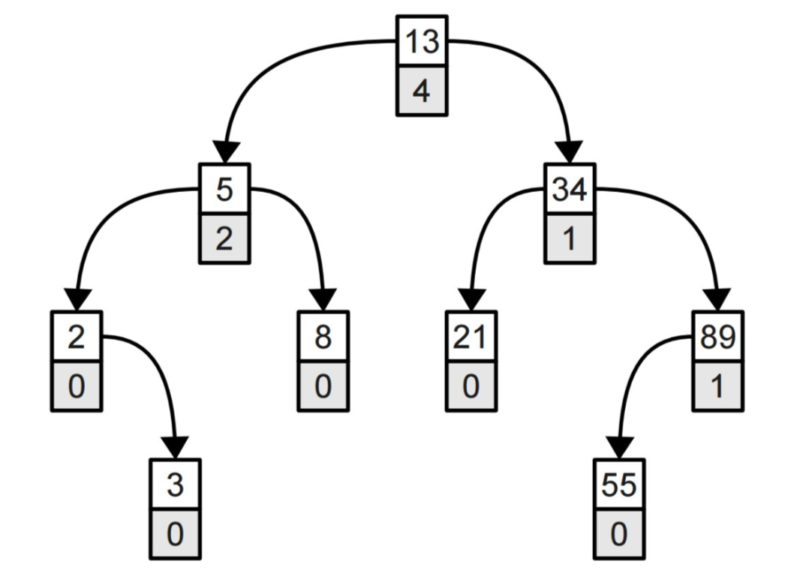
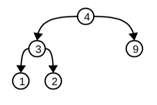
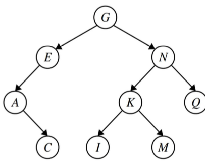
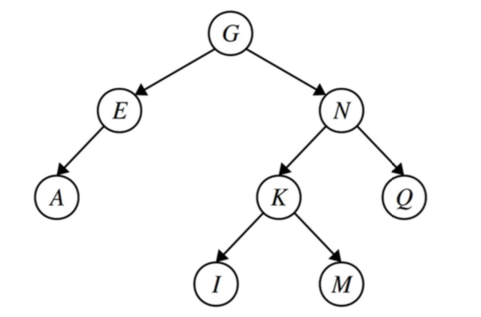
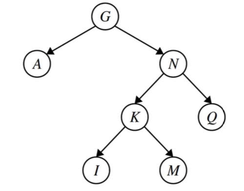
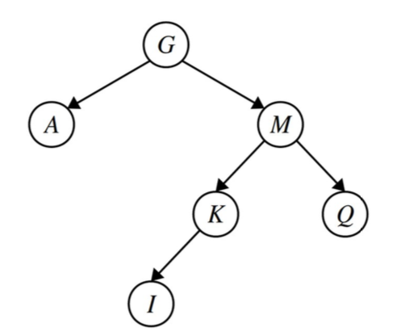

This week’s section exercises are all about trees, particularly binary search trees and common tree idioms and algorithms. Trees are yet another way to organize the way that data is stored, and they are perhaps one of the most powerful paradigms for data storage that we've encountered so far! Their recursive structure makes writing recursive functions very natural, so we will be using lots of recursion when working with trees. After you're done working through this section handout, you'll truly know what it means to party with trees!
Problem One: Binary Search Tree Warmup!
Binary search trees have a ton of uses and fun properties. To get you warmed up with them, try working through the following problems.
First, draw three different binary search trees made from the numbers 1, 2, 3, 4, 5, 6, 7, 8, and 9. What are the heights of each of the trees you drew? What’s the tallest BST you can make from those numbers? How do you know it’s as tall as possible? What’s the shortest BST you can make from those numbers? How do you know it’s as short as possible?
Take one of your BSTs. Trace through the logic to insert the number 10 into that tree. Then insert 3½. What do your trees look like?
There are several trees that are tied for the tallest possible binary search tree we can make from these numbers, one of which is shown to the right. It has height eight, since the height measures the number of links in the path from the root to the deepest leaf. We can see that this is the greatest height possible because there’s exactly one node at each level, and the height can only increase by adding in more levels. A fun math question to ponder over: how many differ-ent binary search trees made from these numbers have this height? And what’s the probability that if you choose a random order of the elements 1 through 9 to insert into a binary search tree that you come up with an ordering like this one?
Similarly, there are several trees tied for the shortest possible binary search tree we can make from these numbers, one of which is shown below. It has height three, which is the smallest possible height we can have. One way to see this is to notice that each layer in the tree is, in a sense, as full as it can possibly be; there’s no room to move any of the elements from the deeper layers of the tree any higher up: 
If we insert 10, we’d get the following: 
Problem Two: Tree-quality
Write a function
bool areEqual(Node* one, Node* two);
that take as input pointers to the roots of two binary trees (not necessarily binary search trees), then returns whether the two trees have the exact same shape and contents.
Let’s use the recursive definition of trees! The empty tree is only equal to the empty tree. A nonempty tree is only equal to another tree if that tree is nonempty, if the roots have the same values, and if the left and right subtrees of those roots are the same. That leads to this recursive algorithm:
bool areEqual(Node* one, Node* two) {
/* Base Case: If either tree is empty, they had both better be empty. */
if (one == nullptr || two == nullptr) {
return one == two; // At least one is null
}
/* We now know both trees are nonempty. Confirm the root values match and
* that the subtrees agree.
*/
return one->data == two->data &&
areEqual(one->left, two->left) &&
areEqual(one->right, two->right);
}
For a Not At All Fun Or Exciting exercise, try writing this one iteratively!
Problem Three: Walking Through the Trees
Write iterative functions to search a BST for a value and to insert a new value into a BST. Then compare what you wrote to the recursive implementations of those functions. Which ones seem cleaner?
Here’s an iterative function to search a tree for a value. It works by manually adjusting a pointer to a tree node to move to the left or right as appropriate. This version is written for the string BST we did in class, but it can easily be adjusted to work with nodes of any type.
bool contains(Node* root, int key) {
while (root != nullptr) {
if (key == root->data) return true;
else if (key < root->data) root = root->left;
else /* key > root->value */ root = root->right;
}
return false;
}
Inserting into a BST iteratively is a bit trickier. The reason for this is that once we’ve walked off the tree and found the insertion point, we have to remember where we were most recently in the tree so that we can update that node to point to the newly-inserted value. This is most easily accomplished by keeping track of two pointers, a current pointer and a previous pointer. Here’s some code for this:
void insert(Node*& root, int key) {
Node* curr = root;
Node* prev = nullptr;
/* Walk the tree to find the insertion point. This is essentially the same
* code for a lookup.
*
* Question to ponder: why did we make a new pointer curr here rather than
* using root?
*/
while (curr != nullptr) {
prev = curr;
if (key == curr->data) return; // Already present!
else if (key < curr->data) curr = curr->left;
else /* key > curr->value */ curr = curr->right;
}
/* At this point we’ve walked off the tree. Let’s build up a new node, then
* wire it into the tree.
*/
curr = new Node;
curr->data = key;
curr->left = curr->right = nullptr;
/* There are two cases to consider here. First, we might have inserted into
* an empty tree, in which case prev will be null.
*/
if (prev == nullptr) {
root = curr;
}
/* Otherwise, the new value should hang off the tree. We need to see how. */
else {
if (key < prev->data) prev->left = curr;
else /* key > prev->key */ prev->right = curr;
}
}
Problem Four: The Ultimate and Penultimate Values
Write a function
Node* biggestNodeIn(Node* root);
that takes as input a pointer to the root of a (nonempty) binary search tree, then returns a pointer to the node containing the largest value in the BST. What is the runtime of your function if the tree is balanced? If it’s imbalanced? Then, write a function
Node* secondBiggestNodeIn(Node* root);
that takes as input a pointer to the root of a BST containing at least two nodes, then returns a pointer to the node containing the second-largest value in the BST. Then answer the same runtime questions posed in the first part of this problem.
Fun Fact: This first algorithm is how the Set<T>::first() function works.
We could solve this problem by writing a function that searches over the entire BST looking for the biggest value, but we can do a lot better than this! It turns out that the biggest value in a BST is always the one that you get to by starting at the root and walking to the right until it’s impossible to go any further. Here’s a recursive solution that shows off why this works:
Node* biggestNodeIn(Node* root) {
if (root == nullptr) error("Nothing to see here, folks.");
/* Base case: If the root of the tree has no right child, then the root node
* holds the largest value because everything else is smaller than it.
*/
if (root->right == nullptr) return root;
/* Otherwise, the largest value in the tree is bigger than the root, so it’s
* in the right subtree.
*/
return biggestNodeIn(root->right);
}
And, of course, we should do this iteratively as well, just for funzies:
Node* biggestNodeIn(Node* root) {
if (root == nullptr) error("Nothing to see here, folks.");
while (root->right != nullptr) root = root->right;
return root;
}
Getting the second-largest node is a bit trickier simply because there’s more places it can be. The good news is that it’s definitely going to be near the rightmost node – we just need to figure out exactly where.
There are two cases here. First, imagine that the rightmost node does not have a left child. In that case, the second-smallest value must be that node’s parent. Why? Well, its parent has a smaller value, and there are no values between the node and its parent in the tree (do you see why?) That means that the parent holds the second-smallest value. The other option is that the rightmost node does have a left child. The largest value in that subtree is then the second-largest value in the tree, since that’s the largest value smaller than the max. We can use this to write a nice iterative function for this problem that works by walking down the right spine of the tree (that’s the fancy term for the nodes you get by starting at the root and just walking right), tracking the current node and its parent node. Once we get to the largest node, we either go into its left subtree and take the largest value, or we return the parent, whichever is appropriate.
Node* secondBiggestNodeIn(Node* root) {
if (root == nullptr) error("Nothing to see here, folks.");
Node* prev = nullptr;
Node* curr = root;
while (curr->right != nullptr) {
prev = curr;
curr = curr->right;
}
return curr->left == nullptr? prev : biggestNodeIn(curr->left);
}
Notice that all three of these functions work by walking down the tree, doing a constant amount of work at each node. This means that the runtime is O(h), where h is the height of the tree. In a balanced tree that’s O(log n) work, and in an imbalanced tree that’s O(n) work in the worst-case.
Problem Five: A Problem of Great Depth and Complexity
Write a function
int heightOf(Node* root);
that returns the height of the given tree. By convention, an empty tree has height -1. Then talk about the big-O time complexity of your solution.
There are many ways to write this function. The easiest one that I know of is to use a nice recursive observation: the height of the empty tree is -1, and the height of a nonempty tree is always one plus the height of the larger of the heights of its two subtrees (do you see why?). To check this, think about what that says about the height of a tree with a single node, the height of a highly degenerate tree, etc. Here’s what this looks like:
int heightOf(Node* root) {
if (root == nullptr) return -1;
return 1 + max(heightOf(root->left), heightOf(root->right));
}
So how efficient is this code? Well, notice that it visits every node in the tree once and exactly once, doing O(1) work at each node. There are O(n) total nodes in the tree, so this does a total of O(n) work.
Problem Six: Order Statistic Trees
An order statistic tree is a binary search tree where each node is augmented with the number of nodes in its left subtree. For example, here is a simple order statistic tree: 
Suppose that you have the following struct representing a node in an order statistic tree:
struct OSTNode {
int value;
int leftSubtreeSize;
OSTNode* left;
OSTNode* right;
};
Write a function
OSTNode* kthNodeIn(OSTNode* root, int k);
that accepts as input a pointer to the root of the order statistic tree, along with a number k, then returns a pointer to the kth-smallest node in the tree (zero-indexed). If k is negative or at least as large as the number of nodes in the tree, your function should return nullptr as a sentinel. Then, analyze the time complexity of your solution.
The key insight you need to have to solve this problem is the following. Suppose you’re looking for the kth-smallest node in the tree (zero-indexed) and the root node has k nodes in its left subtree. In that case, you know that the root node is the one you’re looking for: it has k nodes smaller than it, so it’s the kth-smallest value. On the other hand, suppose that you’re looking for the kth-smallest node and the root node has more than k nodes in its left subtree. Then you should go look in the left subtree for the kth-smallest node, since you know it must be one of them. Finally, suppose you’re looking for the kth-smallest node and the root node has l nodes in its left subtree, with l < k. That means that the node you’re looking for isn’t in the left subtree, and it isn’t the root node, so it’s got to be in the right subtree. Specifically, it’s going to be the (k – l – 1)st-smallest value in that subtree, since you’ve skipped over l + 1 elements in the course of going there.
The resulting code is surprisingly short. Here’s a recursive implementation:
OSTNode* kthNodeIn(OSTNode* root, int k) {
/* Base case: If we walked off the tree, or if we’re looking for an invalid index, we’ve failed.
*/
if (root == nullptr || k < 0) return nullptr;
if (k < root->leftSubtreeSize) {
return kthNodeIn(root->left, k);
} else if (k == root->leftSubtreeSize) {
return root;
} else /* (k > root->leftSubtreeSize) */ {
return kthNodeIn(root->right, k – 1 – root->leftSubtreeSize);
}
}
This runs in time O(h), since we’re descending from the root downward and doing O(1) work per step.
Order statistics trees are a special type of BST called an augmented binary search tree. Augmented BSTs have all sorts of nifty properties and you can use them to solve a bunch of problems much faster than initially seems possible. Take CS161 or CS166 for details!
Problem Seven: Freeing Trees Efficiently
In lecture, we saw that you can use the following recursive function to deallocate all the memory used by a binary search tree:
void free(Node* root) {
if (root == nullptr) return;
free(root->left);
free(root->right);
delete root;
}
(What kind of tree traversal is this?) The problem with this code is that if you have a highly degenerate tree, say, one that’s essentially a gigantic linked list, the recursive depth can get pretty high, so high in fact that it can cause a stack overflow for a sufficiently large tree.
Here’s another algorithm you can use to free all the nodes in a tree in O(n) time, using no recursion at all. This algorithm, which I first heard from a friend who now works at an autonomous vehicle startup, is based on the idea of tree rotations. A tree rotation is a way of reorganizing the nodes in a binary search tree that changes the tree’s shape, but maintains the fact that it’s still a binary search tree. There are two kinds of rotations, left rotations and right rotations, which are illustrated here:
![There are 2 trees. The following describes tree 1, which is labeled rotate left: The root node is B, with child node A one the left. Everything to the left of A is less than A, and everything to the right of A is greater than A and less than B. Everything to the right of B is greater than B. The following describes tree 2, which is labeled rotate right: The root node is A, with child node B one the right. Everything to the left of B is greater than A and less than B, and everything to the right of B is greater than B. Everything to the left of A is less than B.](img/treerotate.png)
Here’s the algorithm for deleting all the nodes in the tree. First, imagine the root node has no left child. In that case, we can just deallocate the root and then proceed to clean up the right subtree. Otherwise, the root has a left child. So let’s do a single right rotation, moving more of the nodes in to the right subtree, and repeat. Eventually, we’ll munch up all of the nodes in the BST, and since there’s no recursion involved here, we use only O(1) auxiliary space. Impressively, this still runs in time O(n).
Implement this algorithm.
Here’s one possible implementation of this algorithm:
void free(Node* root) {
while (root != nullptr) {
/* Case 1: No left child. Delete the node and move right. */
if (root->left == nullptr) {
/* We run into the same problem we had with deleting all the nodes in
* a linked list: we need to free this node and advance to the right.
* So steal a page out of that playbook!
*/
Node* next = root->right;
delete root;
root = next;
}
/* Case 2: Has a left child. Then do a rotation! */
else {
/* Remember the left node for later – we need to overwrite the pointer
* to it in a second.
*/
Node* leftChild = root->left;
/* Have the root pick up the subtree between it and its left child. */
root->left = leftChild->right;
/* The left child now acquires the root as its right child. */
leftChild->right = root;
/* The root now becomes the left child – it’s been hoisted up! */
root = leftChild;
}
}
}
This algorithm is closely related to one called the Day-Stout-Warren algorithm (or DSW) that, given any tree, automatically rebalances it in time O(n) and space O(1). Check it out if you’re curious!
Other cool facts about tree rotations: using tree rotations, it’s always possible to convert any BST for a set of values into any other BST for the same set of values. And if you have a good working implementation of tree rotations going, you can implement all sorts of nice balanced trees. I’d recommend checking out splay trees or treaps as starting points, as they’re both relatively easy to code up.
Problem Eight: Counting BSTs
Write a function
int numBSTsOfSize(int n);
that takes as input a number n, then returns the number of differently-shaped binary search trees you can make out of n elements.
Let’s imagine we have a group of n values and we want to form a BST from them. Let’s suppose we pick the kth-smallest value and put it up at the root. That means that there will be k nodes in the left subtree and (n – k – 1) nodes in the right subtree (do you see why?) If we build any BST we’d like out of the k nodes in the left and the (n – k – 1) nodes in the right subtree, we can combine those trees together with the kth-smallest node as the root to form an overall BST for all the values. Essentially, for each way we can pick
- which node is at the root,
- which tree we want to use for the smaller values, and
- which tree we want to use for the largest values, we’ll get back one possible BST we can form, and in fact every BST we could make will fit into this framework. We can therefore use the following beautiful recursive algorithm to solve this problem:
int numBSTsOfSize(int n) {
/* Base case: There’s only one tree of size 0, namely, the empty BST. */
if (n == 0) return 1;
/* Recursive case: Imagine all possible ways to choose a root and build the
* left and right subtrees.
*/
int result = 0;
/* Put the the nodes at indices 0, 1, 2, ..., n-1 up at the root. */
for (int i = 0; i < n; i++) {
/* Each combination of a BST of i elements and a BST of n - 1 - i elements
* can be used to build one BST of n elements. The number of pairs of
* trees we can make this way is given by the product of the number of
* trees of each type.
*/
result += numBSTsOfSize(i) * numBSTsOfSize(n - 1 - i);
}
return result;
}
This problem is just screaming for memoization, since we’ll end up recomputing the same values a lot of times. We’ll leave that as an exercise to the reader. ☺
Fun fact: the exact number of BSTs you can make from n elements is given by the nth Catalan number. Check out the Wikipedia entry: it’s really interesting! There happen to be the same number of BSTs for n elements as, say, the number of ways you can write a string of n open and close parentheses that match one another, or the number of ways you can triangulate an (n+2)-vertex polygon, etc. Oh, and this shows up in a couple crazy cool algorithms. Take CS166 for details!
Problem Nine: Checking BST Validity

You are given a pointer to a Node that is the root of some type of binary tree. However, you are not sure whether or not it is a binary search tree. That is, you might get a tree like the one shown to the right, which is a binary tree but not a binary search tree. Write a function
bool isBST(Node* root);
that, given a pointer to the root of a tree, determines whether or not the tree is a legal binary search tree. You can assume that what you’re getting as input is actually a tree, so, for example, you won’t have a node that has multiple pointers into it, no node will point at itself, etc.
As a hint, think back to our recursive definition of what a binary search tree is. If you have a node in a binary tree, what properties must be true of its left and right subtrees for the overall tree to be a binary search tree? Consider writing a helper function that hands back all the relevant information you’ll need in order to answer this question.
There are a bunch of different ways that you could write this function. The one that we’ll use is based on recursive definition of a BST from lecture: a BST is either empty, or it’s a node x whose left subtree is a BST of values smaller than x and whose right subtree is a BST of values greater than x.
This solution works by walking down the tree, at each point keeping track of two pointers to nodes that delimit the range of values we need to stay within.
bool isBSTRec(Node* root, Node* lowerBound, Node* upperBound) {
/* Base case: The empty tree is always valid.*/
if (root == nullptr) return true;
/* Otherwise, make sure this value is in the proper range. */
if (lowerBound != nullptr && root->data <= lowerBound->data) return false;
if (upperBound != nullptr && root->data >= upperBound->data) return false;
/* Okay! We're in range. So now we just need to confirm that the left and
* right subtrees are good as well. Notice how the range changes based on the
* introduction of this node.
*/
return isBSTRec(root->left, lowerBound, root) &&
isBSTRec(root->right, root, upperBound);
}
bool isBST(Node* root) {
return isBSTRec(root, nullptr, nullptr);
}
Problem Ten: Deleting from a BST
We didn’t talk about how to delete nodes out of a BST, and that’s for a good reason – it’s surprisingly challenging! Let’s suppose you want to delete a node out of a BST. There are three cases to consider:
- The node is a leaf. In that case, it’s really easy to delete, so we just go and delete it.
- The node has exactly one child. In that case, we delete the node and “replace” it with that one child by updating the node’s parent so that it points directly at the single child.
- The node has two children. In that case, we do the following. Suppose we want to delete the node containing x. Find the node with the largest value in x’s left subtree. Copy the value from that node and overwrite the value x. Then, go and delete that new node instead of x.

Trace through this algorithm by hand on the tree above, deleting C, then E, then N, then M. Then, implement a function
void removeFrom(Node*& root, int value);
that removes the specified value from the given BST, if that value exists. Finally, discuss the runtime of the algorithm you implemented as a function of the height of the tree.
C is a leaf node, so we can delete it by just removing it from the tree:

The node E has only a single child, so we just remove it and replace it with its child to get this tree:

The node N has two children. The largest value in its left subtree is M, so we replace M by N, then delete the node N. This is shown here:

The node M now has two children. To delete M, we start by finding the largest value in its left subtree (K) and replacing M by K. We then delete the node that formerly held K. Since that node has exactly one child, we just replace it with its one child. The result is shown here:
Here’s some code for how to do this deletion.
int removeLargestFrom(Node*& root);
void performDeletion(Node*& toRemove);
void removeFrom(Node*& root, int value) {
/* If the tree is empty, there’s nothing to remove! */
if (root == nullptr) return;
/* If the node to delete is to the left, remove it from there. */
else if (value < root->data) {
removeFrom(root->left, value);
}
/* If the node to delete is to the right, remove from there. */
else if (value > root->data) {
removeFrom(root->right, value);
}
/* Otherwise, we’ve found the node to remove – so go remove it! */
else {
performDeletion(root);
}
}
/* Actually does the deletion necessary to remove a node from the tree. */
void performDeletion(Node*& toRemove) {
/* Case 1: The node is a leaf. Then we just delete it. */
if (toRemove->left == nullptr && toRemove->right == nullptr) {
delete toRemove;
/* Inform whoever was pointing at us that we no longer exist. */
toRemove = nullptr;
}
/* Case 2a: Only have a left child. */
else if (toRemove->right == nullptr) {
Node* replacement = toRemove->left;
delete toRemove;
toRemove = replacement;
}
/* Case 2b: Only have a right child. */
else if (toRemove->left == nullptr) {
Node* replacement = toRemove->right;
delete toRemove;
toRemove = replacement;
}
/* Case 3: Replace this node with the largest node in its left subtree. */
else {
toRemove->data = removeLargestFrom(toRemove->left);
}
}
/* Deletes the largest value from the specified tree, returning that value. */
int removeLargestFrom(Node*& root) {
if (root->right == nullptr) {
int result = root->data;
performDeletion(root);
return result;
}
return removeLargestFrom(root->right);
}